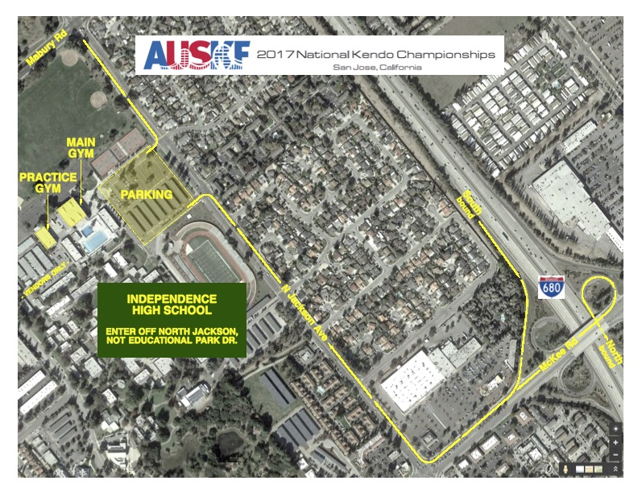

<style>

table, th, td {
    border: 2px solid #666;
    border-collapse: collapse;
	margin-top: 20px;
}

th, td {
    padding: 4px;
    text-align: left;
	vertical-align: middle;
}

</style>

<article id="main">
	<header class="special container">
		<h2><strong>Info</strong></h2>
	</header>

	<section class="wrapper style4 container">

		<div class="content">
			<section>
				This page contains information on:
				<ul style="padding-left:2em; padding-top:0.5em; margin-bottom: 20px;">
					<li><a href="#nationals">2017 AUSKF National Championships</a></li>
					<li><a href="#juniors">7th AUSKF Junior Open National Championships</a></li>
					<li><a href="#map">Map of tournament site facilities</a></li>
					<li><a href="#bento">Food and beverages</a></li>
					<li><a href="#age">Note on age restrictions</a></li>
					<li><a href="#format">Tournament format</a></li>
					<li><a href="#sayonara">Sayonara Party</a></li>
					<li><a href="#shinai">Shinai Check-In</a></li>
					<li><a href="#questions">Additional questions?</a></li>
				</ul>
						
				<br><a name="nationals"><h1 style="padding-top: 50px; margin-top: -50px;"></h1></a>
				<header style="margin-bottom: 8px;"><h3><b>2017 AUSKF National Championships</b></h3></header>
				<b>Friday, June 23, 2017 - Sunday June, 25, 2017</b><br>
				<!-- Information for the 2017 AUSKF National Championships is available in <a href="assets/2017 AUSKF National Championships Prelim Info.(rev09272016).pdf" target="blank">PDF format</a>.<br> -->
				
				<br>
				<b>Individual Divisions</b> - restrictions for each division, if any, are within parentheses
				<ul style="padding-left:2em; padding-top:0.2em; margin-bottom: 20px;">					
					<li><b>Men’s Individual</b> - max 7 registered participants</li>
					<li><b>Women’s Individual</b> - max 7 registered participants</li>
					<li><b>Senior Youth Boy’s Individual (ages 16-18)</b> - max 5 registered participants</li>
					<li><b>Junior Youth Boy’s Individual (ages 12-15)</b> - max 5 registered participants</li>
					<li><b>Senior Youth Girl’s Individual (ages 16-18)</b> - max 5 registered participants</li>
					<li><b>Junior Youth Girl’s Individual (ages 12-15)</b> - max 5 registered participants</li>
					<li><b>Seniors Division Individual (ages 50+, 3-dan and up)</b> - max 5 registered participants</li>
					<li><b>Mudansha Division (men+women combined division, ages 19+, 1 kyu and lower)</b> - max 5 registered participants</li>
				</ul>
				
				<b>Team Divisions</b> - federations can register only one team
				<ul style="padding-left:2em; padding-top:0.2em; margin-bottom: 20px;">					
					<li><b>Men’s Team</b> - 5 participants, max 7 registered team members</li>
					<li><b>Women's Team</b> - 5 participants, max 7 registered team members</li>
					<li><b>Senior Youth Boy’s Team</b> - 3 participants, max 5 registered team members</li>
					<li><b>Junior Youth Boy’s Team</b> - 3 participants, max 5 registered team members</li>
					<li><b>Senior/Junior Youth Girl’s Team</b> (18 and under) - 3 participants, max 5 registered team members</li>
					<li><b>Senior’s Team</b> - 3 participants, max 5 registered team members</li>
					<li><b>Mudansha Team</b> - 3 participants, max 5 registered team members</li>
				</ul>
				
				<b>Cost</b> - for each participant registered in the individual division there is a registration fee of <strong>$100</strong>. For each participant registered for the team divisions, there is a registration fee of <strong>$100</strong>. So if a player is registered for an individual and a team division the total registration fee for that participant will be $200.<br>
				
				<br>
					
				<b>Shiai Rules</b>
				<ul style="padding-left:2em; padding-top:0.2em; margin-bottom: 20px;">					
					<li>Competitors in the Men’s Individual and Team and Women’s Individual and Team divisions must be a registered AUSKF member in good standing for any three (3) years prior to the date of the 2017 AUSKF National Championships. All other divisions only require competitors be a member of AUSKF in good standing.</li>
					<li>All individual championships will utilize a “double-elimination” seeding format in which each player participates in an initial “seeding” round to determine their placement (either first or second) in the championship round. In the event there is an odd number of participants, a random participant shall be automatically placed in the seeding round.</li>
				</ul>
				
				<br><a name="juniors"><h1 style="padding-top: 50px; margin-top: -50px;"></h1></a>
				<header style="margin-bottom: 8px;"><h3><b>7th AUSKF Junior National Championships</b></h3></header>
				<b>Thursday, June 22, 2017</b><br>
				<!-- Information for the 7th AUSKF Junior Open National Championships is available in <a href="assets/7th AUSKF Junior Open National Championships.pdf" target="blank">PDF format</a>.<br> -->
				<br>
				
				The 7th AUSKF Junior Open National Championships will take place on <b>Thursday, June 22, 2017</b> at <b>Independence High School, San Jose, California</b>. Please note that this is the day before the 2017 AUSKF National Championships and is at the same venue. This tournament is open to members of AUSKF in good standing.<br>
				<br>
				<b>Cost</b> - for each participant there is a registration fee of <strong>$50</strong>.<br>
				<br>
				<b>Individual Divisions</b>
				<ul style="padding-left:2em;">
					<li>9-years old and younger</li>
					<li>10-11 years old</li>
					<li>12-13 years old</li>
					<li>14-15 years old</li>
					<li>16-18 years old</li>
					<li>13-under girls</li>
					<li>14-18 girls</li>
				</ul>
				
				Please note that <b>a competitor may only enter ONE individual division.</b> For example, a 12 year old girl cannot compete in both the 13-under girls and 12-13 years old division; she must pick one of those divisions.<br><br>
				
				<b>Team Divisions</b>
				<div style="padding-left:2em;">
					<table>
						<tr><td colspan="2" style="font-weight: bold; text-align: center">Boy's Team Competition</td></tr>
						<tr><th>Senpo</th><td>13 years old and under</td></tr>
						<tr><th>Jiho</th><td rowspan="2">15 years old and under</td></tr>
						<tr><th>Chuken</th></tr>
						<tr><th>Fukusho</th><td rowspan="2">18 years old and under</td></tr></tr>
						<tr><th>Taisho</th>
						</tr>
					</table>

					<table>
						<tr><td colspan="2" style="font-weight: bold; text-align: center">Girl's Team Competition</td></tr>
						<tr><th>Senpo</th><td rowspan="3">18 years old and under</td></tr>
						<tr><th>Chuken</th></tr>
						<tr><th>Taisho</th>
						</tr>
					</table>

					<table>
						<tr><td colspan="2" style="font-weight: bold; text-align: center">Youth Team Composition (Both Boys and Girls)</td></tr>
						<tr><th>Senpo</th><td rowspan="3">11 years old and under</td></tr>
						<tr><th>Chuken</th></tr>
						<tr><th>Taisho</th>
						</tr>
					</table>
				</ul>
				</div>
				
				<b>Shiai Rules</b>
				<ul style="padding-left:2em; padding-top:0.2em; margin-bottom: 20px;">					
					<li><b>Individual Championships</b> will be open to any youth kenshi with AUSKF membership. Each individual is only eligible to participate in a single individuals division; girls are allowed to compete in one of either the Girl's Individual Division or Boy's Individual Division. Time limit for individual matches: 3 minutes with unlimited encho thereafter.</li>
					<li style="margin-top:1em;"><b>Team Championships</b> for both Boys and Girls divisions will consist of up to 2 teams per federation (to be decided by federation at the Championships). Each participant can only play in ONE team.
			        <ul style="padding-left:1em;">
			            <li>Team matches in the Boy's Team Division will consist of 5 members selected from each age group as outlined in the above chart.</li>
						<li>Team matches in the Girl's Team Division will consist of 3 members with no age or rank restrictions (open to all girls).</li>
						<li>Team matches in the Youth Team Division will consist of 3 members with age limit of 11 years and under (boys or girls).</li>
			            <li>Time limit for team matches is 3 minutes.</li>
						<li>In case of daihyo-sen, match will be determined by ipponshobu.</li>
			        </ul>
					</li>
					<li>Tsuki is valid only for 16-18 year old age group in the Individual and Boy's Team (Fukusho and Taisho) Championships. Jodan and Nito will only be allowed in the 16-18 year old age group for Boy's Individual and Boy's Team (Fukusho and Taisho) Championships.</li>
					<li>Taikai format (round robin, tournament brackets, etc.) will mirror the format of the 2016 U.S. Junior Open Championships. Further details regarding the Individual and Team Championships will be announced at a later date depending on the number of participants.</li>
					<li>All other rules will comply with standard rules and regulations set forth by the Federation of International Kendo (FIK).</li>
				</ul>
				
				<br><a name="map"><h1 style="padding-top: 50px; margin-top: -50px;"></h1></a>
				<header style="margin-bottom: 8px;"><h3><b>Map of tournament site facilities</b></h3></header>
				Please note the main gym, practice gym, and designated parking area that will be used during the tournament in the map below. This map is also available in <a href="assets/ihs_map.pdf" target=_blank>PDF format</a> if you wish to print it.<br>
				<p style="text-align:center;"></p>
				
				<br><a name="bento"><h1 style="padding-top: 50px; margin-top: -50px;"></h1></a>
				<header style="margin-bottom: 8px;"><h3><b>Food and beverages</b></h3></header>
				<ul style="padding-left:2em; padding-top:0.2em; margin-bottom: 20px;">					
					<strong>Bento boxes</strong> can be pre-ordered for each of the four days of competition (Thursday - Sunday). 
					Each <strong>bento costs $10 per day</strong> (e.g. a competitor requesting a bento for all four days will pay $40 for bento). 
					Beverages will not be provided, but the tournament host site, Independence High School, will be selling beverages and some food.
				</ul>

				<br><a name="age"><h1 style="padding-top: 50px; margin-top: -50px;"></h1></a>
				<header style="margin-bottom: 8px;"><h3><b>Note on age restrictions</b></h3></header>
				<ul style="padding-left:2em; padding-top:0.2em; margin-bottom: 20px;">					
					<li>For the <b>AUSKF National Championships</b> the age shall be determined as of January 1, 2017. We will also honor the old age requirement - age on the day of the tournament June 23, 2017 - one last time.</li>
					<li>For the <b>AUSKF Junior Open National Championships</b> the age shall be determined as of January 1, 2017 <b>only</b>.
				</ul>
				
				<br><a name="format"><h1 style="padding-top: 50px; margin-top: -50px;"></h1></a>
				<header style="margin-bottom: 8px;"><h3><b>Tournament format</b></h3></header>
				<ul style="padding-left:2em; padding-top:0.2em; margin-bottom: 20px;">					
					Each Tournament Division will be comprised of 2 sections:<br>
					<div style="padding-left:1.0em">
						<strong>Section 1:</strong>	Preliminary Round Matches. No eliminations will occur. Results will determine positions in Section 2 Tournament round.<br>
						<strong>Section 2:</strong> Tournament round matches will follow a single elimination format.<br>
					</div>
				</ul>
					
				<br><a name="sayonara"><h1 style="padding-top: 50px; margin-top: -50px;"></h1></a>
				<header style="margin-bottom: 8px;"><h3><b>Sayonara Party</b></h3></header>
				The Sayonara Party will take place after the last day of the tournament: <b>Sunday, June 25, 2017, from 6:00 PM to 11:00 PM</b>. The cost will be <b>$60 ($30 for kids 10 and under)</b> and <b>RSVPs will be taken at the same time federations order bento and bus service</b>. The party will take place at:<br>
				<ul style="padding-left:2em; padding-top:0.5em; margin-bottom: 20px;">					
					<li><b>Mayflower Restaurant</b></li>
					<li>428 Barber Lane</li>
					<li>Milpitas, CA, 95035</li>
					<li><a href="http://mayflower-seafood.com/indexE.html">Mayflower Restaurant Website</a></li>
				</ul>
				
				<br><a name="shinai"><h1 style="padding-top: 50px; margin-top: -50px;"></h1></a>
				<header style="margin-bottom: 8px;"><h3><b>Shinai Check-In</b></h3></header>
				Competitor's shinais for the AUSKF National Championships must be inspected and certified before the competition to ensure they meet a specific set of requirements. 
				Please refer to this <a href="assets/shinai.pdf" target=_blank>PDF</a> that describes all measurements that will be verified by the shinai check-in staff. 
				Shinais for the AUSKF Junior Open National Championships will not be inspected.
				<br>
				
				<br><a name="questions"><h1 style="padding-top: 50px; margin-top: -50px;"></h1></a>
				<header style="margin-bottom: 8px;"><h3><b>Additional questions?</b></h3></header>
				Please email <a href="mailto:info@auskf-nationals.com?Subject=AUSKF%20Nationals%202017%20Info" target="_top">info@auskf-nationals.com</a> with any questions or concerns. 
				Thank you!<br>
			</section>
		</div>

	</section>
</article>
